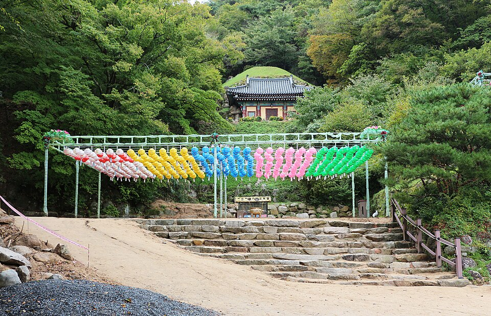

NO 번뇌 JUST AI 극락도 락이다
PRESS ME ↓ 번뇌 하나씩 털어내기
108남은 번뇌
SINCE 2026 · AI 법당AI 고르다 지친 중생 여러분, 고생 많았어요. 조원들이 직접 써본 0개의 AI로 번뇌를 덜어드릴게요.
SCROLL DOWN↓
01 · PICK YOUR 바라밀
오늘의 수행 고르기
뭘 써야 할지 모르겠다면? 오늘의 수행부터 골라 보세요. 그 분야에 딱 맞는 AI만 모아서 보여드려요.
02 · MEET 동자승
AI 고르다 생긴 번뇌,
AI 고르다 생긴 번뇌,
동자승이 접수합니다
조원들이 직접 써보고 정리한 요금, 장점, 단점을 굿즈 카드처럼 모아 놨어요. 궁금한 건 길잡이 동자승한테 물어보세요. 답장은 빛의 속도로 ⚡

AI 고르다 생긴 번뇌, 여기 두고 가세요.
▼
03 · AI 경전 정주행
AI 경전 ALL SERVICES
GOAL · 해탈 완료
번뇌는 접고